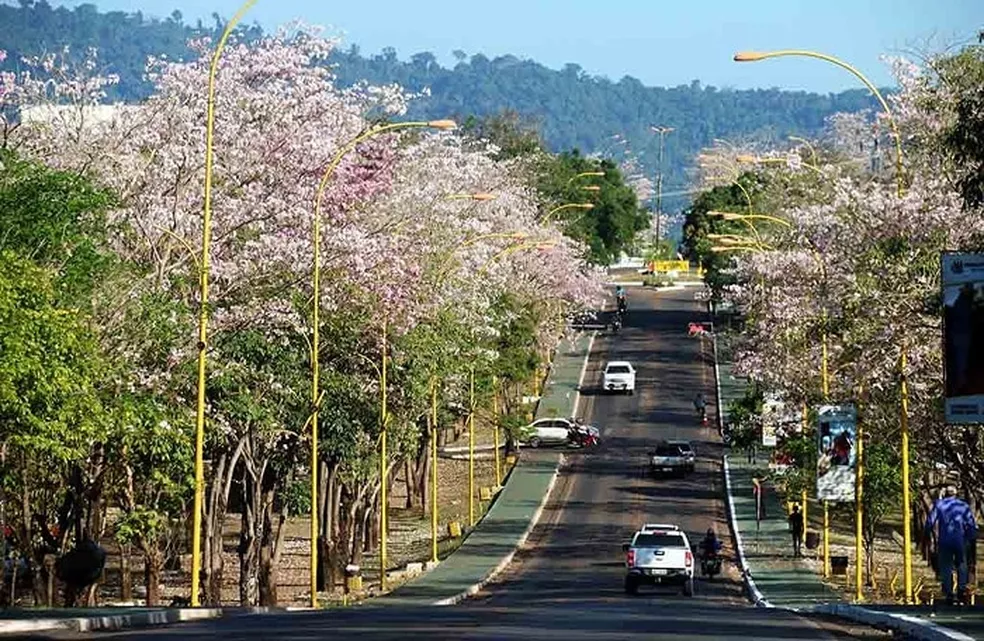

Foi na década de 60 que o Geólogo Breno dos Santos descobriu a maior jazida de minério de ferro do mundo, na Serra dos Carajás, até então território de Marabá, mas foi apenas em 1970 que o Projeto de Ferro Carajás começou a sua fase de instalação. Ainda na década de 70 que a Companhia Vale do Rio Doce (atual VALE) se associou à empresa U.S. Steel criando a AMZA – Amazonia Mineração S.A. para explorar o Projeto Ferro Carajás. Em 1981, a Vale adquiriu a exclusividade de explorar minério de ferro, ouro e manganês no local, antes habitada por índios Xikrin do Cateté e remanescentes do Ciclo da Castanha. É em meio a esse cenário modificado a cada dia que novos territórios e pessoas oriundas de todas as regiões do Brasil se fixaram no sudeste do estado do Pará.
Parauapebas tem aproximadamente 202 mil habitantes, de acordo com o último censo do IBGE de 2016. Com um fluxo migratório impulsionado pela extração de recursos minerais, essa população do vem se formatando e se readequando neste novo território desde a década 60, momento das grandes descobertas das minas de ferro do Projeto Ferro Carajás.